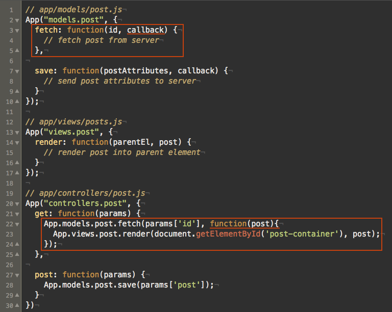

Promises
Artūrs Mekšs

AMekss

@arturs_mekss
Who am I?
- I'm working as an application developer since 2003
- I'm building stuff in javascript since 2006
- I'm working at Tieto as a Ruby developer
- I'm still learning and discovering new things
My JavaScript open source foot print
jquery.quicktip.js - drop in replacement for default browser tool tips. Aims to be the simplest solutions for that. Doesn't do anything fancy but show nice tool tips.My JavaScript open source foot print
namespace.js - your best friend for dealing with javascipt global variable space.Let's make a javascript MVC application from scratch and see namespace.js in action ..
First we need some model and a view
Then we can use it in our controller
The same but for comments in coffee
Of course in production I usually use Backbone for MVC

But let's get back to our post MVC
Promises to rescue
What is Promises?
- In common usage, the terms Promise, Deferred, and Future are roughly synonymous.
- A Deferred/Promise object can be viewed as a three states state machine:
Brief history of Promises
- - The term was first used by C++ engineers on the Xanadu project
- - Promises were later used in the E programming language
- - E programming language inspired Python developers to implement them in the form of the Twisted framework’s Deferreds
Brief history of Promises in JavaScript
- - Promises hit the JavaScript mainstream in 2007 when the Dojo framework, taking a cue from Twisted, added an object called dojo.Deferred
- - In 2009, citing dojo.Deferred as an influence, Kris Zyp proposed the CommonJS Promises/A spec.
- - In January 2011 within version 1.5 it was introduced in jQuery by $.Deferred object
- - Other popular choices beside jQuery is Q.js and FuturesJS
Making promises with jQuery
- - jQuery 1.5+ ($.ajax, $.get, and $.post) return Promises
- - Up until jQuery 1.8 there were changes and new feature in the API so it's better to use jQuery 1.8+ for making promises
- - You can make your own promises via $.Deferred object
Why $.Deferred object?
Well Deferred object is Promise, or private representation of it. You can resolve or reject promise via it.While promise is public object and can only accept callbacks or return its state (pending/resolved/rejected).
Progress notifications
There are private notify method and public progress special type of callback witch can be triggered any number of times.$.Deferred vs CommonJS Promises/A
Notable differences: jQuery uses the term resolve as the opposite of fail, whereas Promises/A uses fulfill. Under Promises/A, a Promise is said to be “resolved” when it’s either fulfilled or failed.Q.js is straight forward CommonJS Promises/A implementation and provide convenient way to convert promises
Let's try promises in action ..
#1 Example Dialog
#2 Example Flow control
Refactoring our post MVC
Conclusion
- - Promises are an abstraction that let us represent simple tasks with objects that can be combined to represent complex tasks.
- - While with promises there is possible to build simple flow controls, but generally it's better to use flow control libs for that e.g. async.js
Books to read
Happy hacking! :)
Paldies! Thank you!